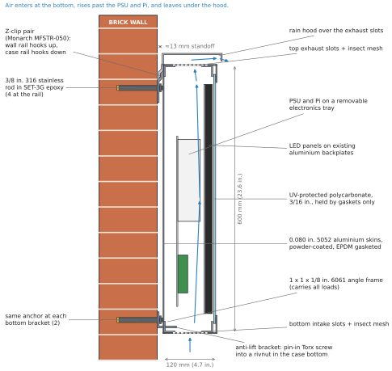
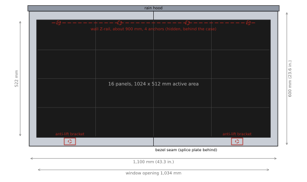
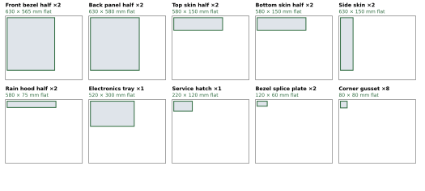
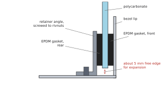

The display (16 LED panels, 1,024 × 512 mm active area, Raspberry Pi 5, 5 V / 100 A supply) moves from its current plastic case with a slide-in back into a powder-coated aluminium case, hung on a brick wall at the station with an aluminium Z-clip cleat and stainless epoxy anchors.
| Decision | Choice | Why |
|---|---|---|
| Wall attachment | Aluminium Z-clip pair (Monarch MFSTR-050), 4 anchors at the rail, 2 anti-lift brackets at the bottom | Self-levelling, spreads the load, lifts off for service; the brackets stop theft and wind pry-out |
| Anchors | 3/8 in. 316 stainless threaded rod in Simpson SET-3G epoxy; screen tubes if the brick is hollow-cored | Adhesive anchors do not wedge, so they do not split old brick; stainless will not rust or stain |
| Case structure | 1 × 1 × 1/8 in. 6061 angle frame carrying all loads; 0.080 in. 5052 aluminium skins | Light, does not rust, cheap to have laser-cut, bent and powder-coated |
| Fabrication | Every sheet part fits SendCutSend's 30 × 36 in. powder-coat limit (case split at the centre line) | Ordered online from a CAD file; no local shop needed |
| Closures | Screwed back halves: #10-32 pin-in Torx stainless screws into rivnuts, EPDM gaskets | Replaces the slide-in back; threads never wear the aluminium; tamper-resistant |
| Window | 3/16 in. UV-protected polycarbonate, light smoke tint, floating in gaskets with no holes | Will not shatter; UV grade does not yellow; tint improves LED contrast; floating mount allows 4 mm of expansion |
| Cooling | Bottom intake and top exhaust slots with insect mesh, under a rain hood; optional fan | About 80 W of heat at normal content, up to 400 W at full white |
| Item | Value | Source / status |
|---|---|---|
| Active display area | 1,024 × 512 mm (16 panels, each 256 × 128 mm) | E90 report, measured |
| Case envelope | 1,100 W × 600 H × 120 D mm (43.3 × 23.6 × 4.7 in.), plus a 25 mm rain hood | This plan; confirm in CAD |
| Estimated weight | About 27 kg (60 lb), breakdown below | WEIGH the current assembly |
| Design weight | 75 lb (34 kg), about 25% above the estimate | Covers the estimate's uncertainty |
| Heat inside the case | About 80 W typical (≈1 A per panel), up to about 400 W at full white | E90 report measurements |
| Mains | One 120 V outlet, GFCI, weatherproof in-use cover | E90 report: one outlet only |
| Location | Brick wall of the station building, under the canopy if possible, bottom edge 2.1 to 2.4 m up | CONFIRM with SEPTA |
| Part | kg | Basis |
|---|---|---|
| Aluminium skins (bezel, back, top, bottom, sides, hood) | 7.2 | 1.32 m² of 0.080 in. (2.03 mm) sheet |
| Angle frame | 3.8 | 8.7 m of 1 × 1 × 1/8 in. angle at 0.29 lb/ft |
| Polycarbonate window | 3.3 | 1,075 × 560 × 4.5 mm |
| LED panels | 5.6 | 16 × about 0.35 kg, estimated |
| Existing aluminium backplates | 3.5 | Estimated (four 3 mm plates with cut-outs) |
| PSU, Pi, tray, cables, clips, hardware | 4.0 | Estimated |
| Total | ≈ 27 | ≈ 60 lb. Design for 75 lb. |

| Item | Specification |
|---|---|
| Anchor | 3/8 in.-16 type 316 stainless threaded rod set in Simpson SET-3G epoxy (two-part, rated for concrete and masonry) |
| Quantity | 6: four through the wall rail, one at each of the two bottom brackets. One anchor type and one drill bit for the whole job. |
| Solid brick | 7/16 in. carbide bit, rotary only (hammer off). Embed at least 3-1/2 in., more if the manufacturer's brick table requires it. |
| Hollow-cored brick | 9/16 in. hole with a Simpson Opti-Mesh 3GWS373P screen tube (3/8 in. rod, 3-1/2 in. long), so the epoxy keys behind the shell instead of running into the void. |
| Hole cleaning | Blow out, brush with a Simpson ETB nylon brush sized to the hole, blow out again. A dusty hole is the most common cause of a weak adhesive anchor. |
| Cure | SET-3G cures slowly and installs only at 40 °F or warmer. Follow the cure-time table on the cartridge and hang the case the next day or later. |
| Placement | Centre anchors in whole bricks or in mortar joints as SEPTA prefers (below). Stay clear of wall edges, openings and the top course, and follow the manufacturer's edge and spacing distances. Slot the rail holes so anchors can land where the brick is sound. |
| Alternative adhesive | Hilti HIT-HY 270 has an ICC-ES evaluation (ESR-4144) that specifically covers unreinforced and multi-wythe brick. If SEPTA's engineer wants published design values for historic brick, use it instead: same geometry, with Hilti rods and dispenser. |
| Fallback | 3/8 in. stainless (18-8) sleeve anchors, if adhesive is not allowed. Do not use wedge anchors in old brick: they can split it. |
| Load case | Working load | Per anchor | Per anchor × 4 |
|---|---|---|---|
| Weight, carried as shear by the 4 rail anchors | 75 lb | 19 lb shear | 75 lb |
| Overturning (centre of mass ≈2.9 in. off the wall, resisted over ≈20 in.) | 218 lb·in | ≈3 lb tension | ≈11 lb |
| Wind suction, 30 psf placeholder on 7.1 ft² (all 6 anchors) | 213 lb | 36 lb tension | 142 lb |
Requirement: each anchor's allowable load in this brick (from the manufacturer's masonry tables or ESR, not the concrete tables) must be at least 150 lb in tension and 100 lb in shear. 3/8 in. adhesive anchors in sound brick are normally well above this, but this is the number to confirm. The 30 psf wind figure is a deliberately conservative placeholder; under a canopy the real value is much lower. SEPTA's engineer should set it.



Air rises through the case by itself: in at the bottom, past the PSU and Pi, and out at the top under the hood (Figure 1).
| Heat load | Airflow for a 10 °C rise | Approach |
|---|---|---|
| 80 W (normal content) | 14 CFM | Natural convection through the vents below |
| 150 W | 26 CFM | Natural convection is marginal; add the fan |
| 400 W (full white) | 70 CFM | Fan required. The software avoids this with mostly-black layouts and overnight dimming |
HARDWARE.md); case vents do not replace it.HARDWARE.md §1, docs/wiring-diagram.pdf).Prices are approximate, from retailer listings in October 2026; check before ordering. Quantities are for one display.
| Item | Qty | Source | ≈ USD |
|---|---|---|---|
| Mounting | |||
| Aluminium Z-clip, high-load, MFSTR-050 | ≈1.9 m (wall rail 900 mm, case rail 1,000 mm) | Monarch Metal (selector) | 40 |
| SET-3G epoxy, 8.5 oz cartridge | 2 (1 spare) | Home Depot (product page) | 60 |
| Dispensing gun for SET-3G (Simpson CDT10S) | 1 | Griff Building Supplies; a standard caulk gun may stall on epoxy | 25 |
| 316 stainless threaded rod, 3/8-16 × 3 ft | 1, cut into six 6 in. studs | Bolt Depot | 23 |
| 316 stainless 3/8-16 nuts and fender washers | 6 + 6 | Bolt Depot, same order | 12 |
| Screen tube 3GWS373P IF HOLLOW BRICK | 6 | US Tool & Supply | 20 |
| Hole-cleaning brush (ETB, sized to the hole) and hand blow-out pump | 1 + 1 | Simpson ETB brushes | 20 |
| 7/16 in. carbide masonry bit (9/16 in. with screen tubes) | 1 | Any hardware store | 12 |
| Nylon shoulder washers, 3/8 in. | 12 | McMaster-Carr | 10 |
| Anti-lift brackets, 2 mm aluminium L | 2 | In the sheet-metal order | (case) |
| Stainless sleeve anchors, 3/8 in. FALLBACK ONLY | 6 | Albany County Fasteners (choose the length for the brick) | (15) |
| Case | |||
| Sheet-metal parts (Figure 3), 0.080 in. 5052, cut, bent, powder-coated | 1 set | SendCutSend or OSH Cut | 250 to 450 |
| 6061-T6 angle, 1 × 1 × 1/8 in. | ≈30 ft | OnlineMetals #971, cut to length | 60 |
| UV-protected polycarbonate, 3/16 in., light smoke, ≈1,075 × 560 mm | 1 | TAP Plastics (or AR-coated) | 100 to 200 |
| EPDM closed-cell foam tape, 1/8 × 1/2 in. × 65 ft | 1 roll | Okayasu Rubber, Amazon | 15 |
| #10-32 pin-in Torx button-head screws, 18-8 stainless, 1/2 in. | ≈80 | Albany County Fasteners | 30 |
| T-25 pin-in Torx driver bit | 2 | Any hardware store (usually sold separately) | 8 |
| 10-32 rivnuts, aluminium, for 0.080 in. sheet | ≈100 | Industrial supplier (McMaster-Carr, Fastenal) | 25 |
| Hand rivnut tool + 10-32 mandrel | 1 + 1 | Astro 1442, 10-32 mandrel | 65 |
| Frame bolts: 1/4-20 stainless hex bolts, nylon-insert lock nuts, washers | ≈40 | Bolt Depot | 25 |
| Insect screen, stainless or aluminium, and outdoor adhesive | 1 small roll | Hardware store | 15 |
| 5 V 120 mm fan + thermostat switch OPTIONAL | 1 | Only if the heat test needs it | (30) |
| Electrical | |||
| PG13.5 nylon cable gland, IP68 | 1 pack | Baomain, Amazon | 10 |
| Ground lug, green/yellow 14 AWG lead, star washers | 1 set | Hardware or electrical supplier | 10 |
| GFCI outlet + extra-duty in-use cover | 1 | Taymac MG500GS, Home Depot (electrician installs) | 22 |
| 16 AWG red/black wire for the Pi feed | 2 m | Hardware store | 8 |
| Estimated total, excluding optional and fallback items | ≈ 850 to 1,150 | ||
| Test | Method | Pass |
|---|---|---|
| Earth continuity | Meter from the plug's earth pin to every skin, the frame and the hood | Below 1 Ω everywhere |
| Water | Garden hose at shower strength on the top, sides and window for 10 minutes, the way rain would hit it | No water inside; the bottom slots drain |
| Heat soak | Closed case: full white for 30 minutes, then the normal board for 2 hours; log vcgencmd measure_temp and an internal thermometer | Pi below 75 °C and air inside below 50 °C; otherwise fit the fan |
| Power | White-screen test with vcgencmd pmic_read_adc EXT5V_V and vcgencmd get_throttled | Pi at 5.0 V or above; throttled reads 0x0 |
| Hang | Rail on a test wall or bench fixture; hang the case and add load to 2× its weight for 10 minutes | No movement or deformation |
HARDWARE.md and docs/wiring-diagram.pdf in github.com/BenGreenberg07/septa-tracker (power faults, as-built wiring).